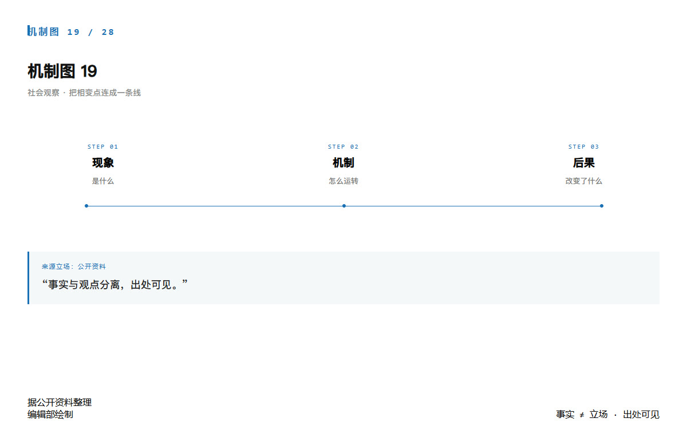

规则是怎么被改写的：五个节点，一条路径
社会观察 · 把相变点连成一条线
规则不是某天宣布改的。它是回过头看，才发现某几件事之后，大家发帖前的动作变了。
下面五件事都来自公开报道和已有的梳理。引文照抄原始记录，当事人的具体指控一个字不转述。这里只做一件事：把规则前后摆在一起看。
但你今天发一条评论之前那半秒的犹豫，就是这些节点留下的。你以为的「我这人比较谨慎」，其实是环境替你养成的习惯。
2016 年 8 月那个凌晨，一份离婚声明把奥运会头条抢走了。话题阅读 99 亿，同期的里约奥运 204 亿，三个人的家事分走近一半注意力。数字来自当年的公开报道，到今天仍吓人。
规则前，情绪化表达是一种风格；规则后，它是估值方法。同样一件事，情绪密度越高，资产价格越高。相变点不在事件本身，而在事件之后，全行业的生产顺序倒了过来：先选立场，再组织事实。
2018 年 3 月，微博把互动写进排序因子。在此之前，「谁互动多谁占优」只是观察者能怀疑、能举反例的经验；在此之后，它成了公告，成了可执行的条款。同年，小作文文体定型，恰好是互动率最高的形态。
两件事咬合，机器才开始自动运转：规则提供定价，文体提供弹药。我每次回看这个节点都觉得，真正变了的不是某条算法，是发帖前那半秒——人们开始先想「这句话会不会有人转」。
2020 年那起单方长文指控，最后是反转收场。但反转没有完成修复：被指控方的职业中断、搜索结果的负面沉积、社交关系断裂，都没有跟着回滚。人们第一次看清，叙事结论即时生效、单向执行，推翻它的传播权重趋近于零。
这一课两边都学到了。指控方学到先发定性几乎无成本，被指控方学到自证几乎无收益，两边的策略同时朝极端走。必须说清：这不是说所有指控都是假的。单方陈述有真有假，这里只取机制——先发优势与修复成本不对称。
离现在最近的两个标本，一个是彩礼案，一个是员工公开信。前者是单方口述定调的教科书：28 分钟连麦里，当事人自述先定义了「发生了什么」，法律科普始终是追赶者。后者展示了另一种打法。
146,766 个签名被拆成四类：员工 7,293、前任 1,356、股东 78,337、支持者 59,780。把联署这个模糊动作变成可核对的名单，是对轰和沉默之外的试探。两条路并存不意味着谁赢了，只意味着工具箱里多了一件东西。
五个节点连起来，路径就完整了：2016 验证估值，2018 制度定价，2020 暴露修复成本，2026 对轰与结构化自证并存。规则改写的标志不是公告，是行为预期的变化——你发帖前的算法、争论时的默认动作、自证的成本结构，变了。
下次看到刷屏事件，先别问谁对谁错，问一句：这件事之后，大家说话的方式变了吗？变了，就是又一次改写。把它认出来，规则就从环境变回议题。这就是这套拆解能给的出口，不多，但够用。
📌 一个值得记住的判断
规则改变不是宣言，是事后才被认出的行为预期。你感觉到的「大家现在都这样」，往往是某几次改写留下的沉积。
编辑部综述 · 复盘方法
「规则改变不是宣言，是事后才被认出的行为预期。」
认出相变点，比记住热点重要。热点会过期，行为预期不会。

▲ 五个节点与规则改写路径（编辑部绘制）
✍️ 你有没有过「发帖前先想一下」的时刻？
是怕被断章取义，还是怕引来一堆私信？评论区说说。觉得有用，点个赞、点个「在看」，转给也会刷到这类热点的人。
下一篇：同一件事，为什么会有两种口径，而且它们互相喂养。
资料来源
公开报道：2016 年明星离婚事件的话题阅读 99 亿、同期奥运 204 亿；2018 年 3 月微博四因子排序公告。
公开报道与既有整理：2020 年单方长文指控事件的反转及其后续影响；指控内容不转述、不评价。
本工作区既有拆解：《2026.11.11 · 28.8 万彩礼谈崩》与《2026.11.15 · 员工公开信》；前者连麦为单方陈述，未经另一方证实，后者含 146,766 签名四分类数据。
「行为预期相变点」为这套拆解的识别标准，属方法论概念；五节点路径为归纳。
社会观察，不站任何性别立场。事实据公开来源，指控不转述、不评价。拆解是为了理解，不是行动指南。